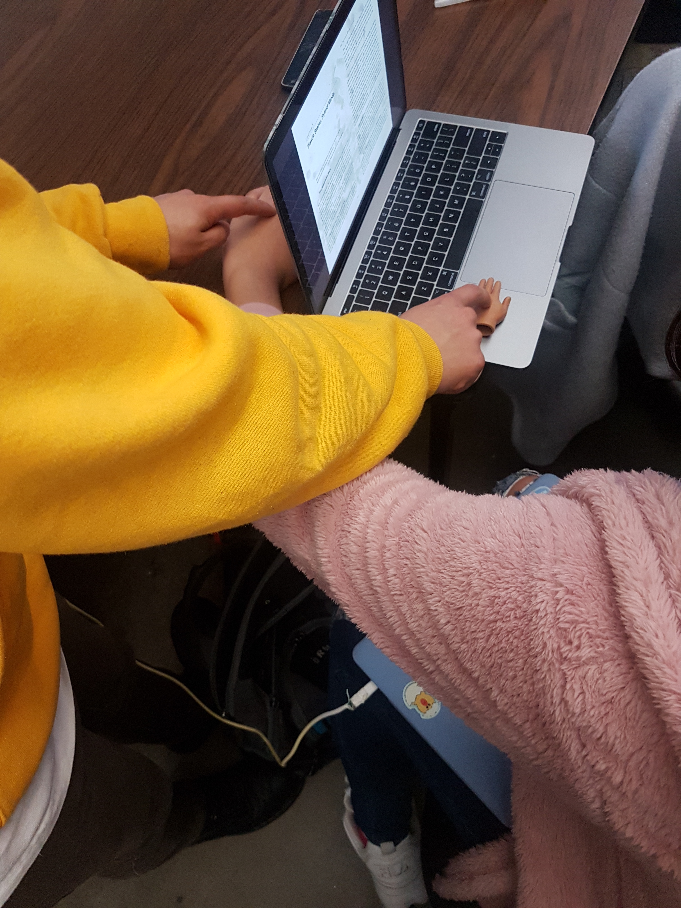

There are several different ways in which humans can fool their mind into wrongly perceiving the parameters of their bodies. These experiments reveal the suggestable nature of human perception and how much of sensation is in the mind. When talking about prosthetics, this might be sort of parallel to transparent technologies that become an extension of our minds and bodies. (The author also apparently wears Hawaiian shirts.) The things that we see can even be manipulated by the things we're told, ignoring stuff in plain sight, or by their position in our frame of view. The brain is "opportunistic" and will compromise and fix things automatically based on our prior knowledge and automatic processes. Circling again back to cyborgs, this "memory" or these processing can also be contained in tools and we can think of them similarly. Problem solving and language are also skills which depend upon outside knowledge.
1. I think a good example is the times where I immediately forget something that I just did, just forgetting if I turned off a light or locked a door. Sometimes, I swear I feel my phone vibrating too, but there's no message or notification. The chapter example of sketching and not getting it right is relatable too.
2. It makes you think about how useful language is and how it's helped us convey specific information so easily. I think the mangrove methaphor is unnecessarily complicated for a simple concept, but it, nevertheless, something I think is correct. I remember experiments being done on how people from certain languages that don't distinguish between green and blue can't tell subtle difference between the colors as people from languages that do. I also recall a study where people are more willing to say offensive things and not realize how bad they are in a secondary language, even if they're fluent, than in their first language. I think experiments like these are evidence that language influences how we think and perceive things.
3. Meta knowledge is knowing how to find the answers, while constructive learning is building on what's already there. They have in common that they're not just rote memorization styles of learning, but are still very useful or problem solving. I guess I could learn an awareness of different learning styles so I can consciously employ them? I'm not sure if I'm understand what "this" is referring to in this question.
CH. 4
Our group initially discussed ideas about a control device which would measure the users stress and control a gun's functions based on how they're feeling. We also discussed something that would help you pick different foods.
I came up with an approachability sensor that would make decisions for a socially anxious person:
1. Approachability sensor. Helps alleviate social anxiety and awkward conversation by taking the unknown aspect of whether a person is interested in talking to you.
2. Maybe sensors below the skin on the face and in the eye that recognize small movements in facial features (like people raising their eyebrows indicates openness to conversation for example).
3. When widely implemented, it helps you decide whether it's okay to talk to people. Perhaps it could have a spectrum of colors to indicate a person's approachability and openness.
4. Maybe an ocular lens implant with a display that's permanent (but can be switched on and off) and when you look at someone, it shows if they're open to conversation or want to talk or not.
5. Probably pay a test group to have the devices installed and have them maybe live together for a while to test it.
6. Video, maybe a video of the first person feed of the contact lens display, photos of the device, data on how it enhanced the social experience.
Tricks

We did the hand trick. Even though we used a tiny hand, it still for a split second felt as though there was a weird switch in the hand feeling. It was pretty weird.